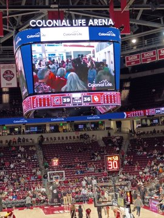

University of South Carolina Men's Basketball

South Carolina Mens Basketball is a Division I competitive basketball team which plays in the Southeastern Conference, one of three most prestigious conferences along with the BigTen, and the ACC which are historic basketball powers.
The Mens team has a 2025-2026 record of 11-8 with a recent victory over Southeastern Conference rival Oklahoma at Home in a stadium which hangs the NCAA National Championship Banners of its very popular sister team the Womens Basketball team.